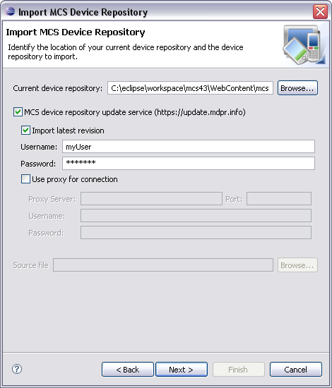

Because new devices are always being added by manufacturers, and over 300 attributes are recorded for many devices, the MCS repository is continually reviewed and updated.
You can obtain updates to a standard device repository from the update service over the Web, or update one or more projects from an recent download to your file system. You can also use the alternative mcsClientUpdate command line utility to download the latest version from the update service.
The update service requires a login; there is also an option to define the URL address and port of a proxy server, together with a username and password.
The first page of the Import Repository wizard

When you use the update service, you can choose the location of a repository to update, and you can optionally pick a specific revision of the standard repository. The revision identifier will usually consist of a date and version in the form yyyymmddvv. A description gives a brief overview of the changes.
You can also specify whether the update should be merged with the existing repository, overwrite it, or saved to another file.
Related topics
About devices
Device repository update CLI